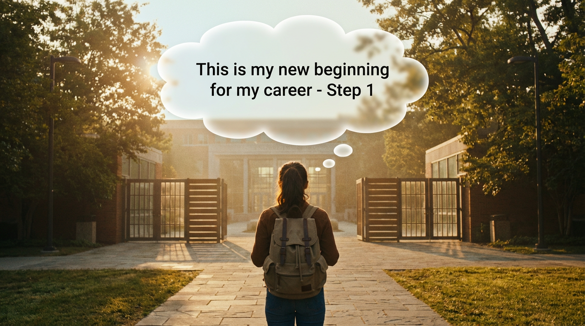
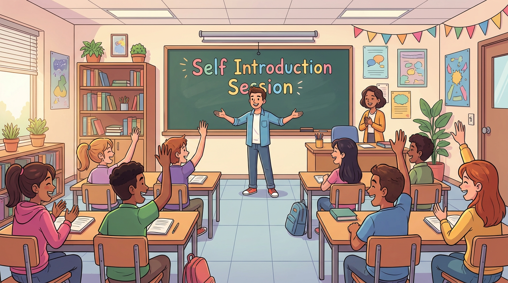

My (1st-3rd) yr journey in college



My role in college


🎓 I am a final-year Electronics and Communication Engineering student, and I would like to share my college journey — the roles I took, the challenges I faced, and the lessons I learned along the way.
🚀 My college life has given me many experiences that helped me understand responsibility, discipline, and personal growth. Through this story, I want to share how I faced different situations, how I overcame challenges, and what I learned during my time in college.
🔥 Are you ready to level up your life?
📖 This is more than just a story about my college days. It is a journey that may guide, motivate, and prepare you for the future.
✨ Don’t just read it — feel it, learn from it, and apply it in your own life.
🎬 Like many students, I entered college with a lot of excitement. I imagined that college life would be energetic and full of fun, almost like scenes from a cinematic movie. I expected interesting classes, inspiring teachers, and new friendships that would make my college life memorable.
⚡ However, the reality was a little different.
📅 On the first day of college, it was only a half-day session. The college welcomed us warmly and even gave sweets to everyone 🍬, but there were no actual classes.
😅 For the first week, things felt a bit boring because classes had not yet started. Most of the time was spent on introductions about the college, the syllabus, and the rules.
👨🏫 One day, our class advisor asked if anyone was willing to become the class representative to manage attendance for each period and coordinate with the faculty.
🤔 I expected many students to volunteer, but surprisingly no one raised their hand.
⏳ After waiting for a few minutes, I realized that this could be a valuable experience.
💡 I didn’t want to miss the opportunity, so I decided to step forward and take the responsibility.
🌱 And that small decision became the beginning of my real college journey.


|
LEARNING NEW LANGUAGE DRAWING |